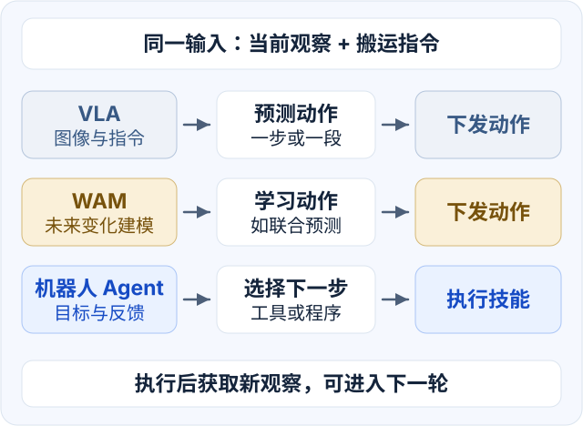
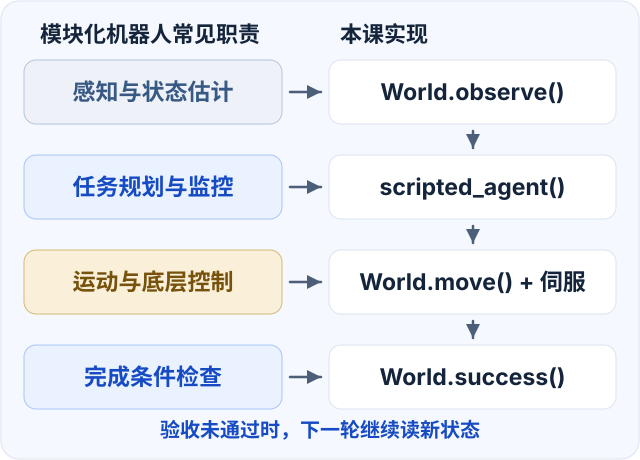
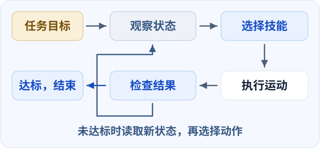

一条任务贯穿这门课。桌上有一个红方块和一个蓝色目标区，用户说“把红方块放到蓝区”。机械臂已经抓稳了方块，蓝区却在搬运中途换了位置。谁接收了变化后的观察，谁决定继续、改动作或者停下来？
如果你接触过 OpenVLA 一类的视觉语言动作模型，可以从自己熟悉的输入输出想起。第一次看到 VLA 也没关系，先记住一句话：视觉语言动作模型（Vision–Language–Action Model，VLA）根据图像和语言指令产生机器人动作。读完这一章，你应该能顺着一条指令找到感知、决策、运动和验收分别在哪里，也能指出我们这个教学实验把哪部分做成了可以替换的代码。
同一个任务，三种实现方式

VLA：从观察和指令得到动作
给策略当前图像和“把红方块放到蓝区”，有些实现还会提供机器人自身状态。策略输出一个动作或一小段动作，例如接下来几步的末端位移和夹爪命令。机器人执行后，系统可以拿新图像再次调用策略。蓝区变了，策略有机会在下一次推理时给出不同动作，能否跟上变化要靠实验检查。一次输出多步动作时，还要看部署端执行多少步才取下一次观测。
WAM：用未来的变化帮助学习动作
世界动作模型（World–Action Model，WAM）把动作学习与预测未来观测或其内部表示联系起来。以 DreamZero 为例，模型联合预测未来画面和动作。同样的搬运任务里，未来画面可以表示红块被抬起、放下后场景应怎样变化。那是预测，执行后观察到的结果才可用来检查任务。
WAM 的实现有多种。Fast-WAM 在训练时保留视频和动作联合学习，执行时可以直接生成动作。因此，看一个 WAM 时可以分别问两句：训练时学了什么，运行时真正输出什么？
机器人 Agent：把观察、决策和执行接成任务循环
这一章说的机器人 Agent 是一个围绕目标运行的系统。它拿到观测和执行反馈，选择下一步，调用工具或技能，再检查结果。决策器可以是明确的规则、能调用工具的语言模型，也可以由模型生成一段程序，让程序在本地完成多步控制。
对搬运中的蓝区移动，一种 Agent 实现会先更新蓝区位置，再把新坐标交给移动技能。如果看不清，它也可以先调用观察工具。这里的差别在于下一步如何表达、能读哪些反馈、由哪段代码决定继续。VLA 和 WAM 也可以形成动作反馈闭环，而且它们可以作为 Agent 调用的局部策略。第 5 章会拆开这个接口。
Agent 对应原系统里的哪些模块？
常见的模块化机器人系统会分别做感知、任务规划、运动控制和执行监控。在典型 VLA 中，视觉编码器把图像转成内部表示，动作输出模块结合语言和观察表示来预测动作。诸如“接近、抓取、再转移”的顺序可能由策略隐式学到。动作换算、下发和如何结束一轮任务，也可以由运行策略的外部程序承担。
本课把任务级决策与执行监控放进 scripted_agent() 循环。感知结果从观察接口进入，运动由技能执行，验收由明确的状态条件给出。这样，你能在代码里找到以前由策略隐式完成、或者由部署程序单独负责的每一项功能。

| 原系统里的职责 | 在 Agent 系统中可以放在哪里 | 本课代码 |
|---|---|---|
| 感知、状态估计 | 相机、检测器或状态接口向决策器提供观测 | World.observe() 先读仿真状态，第 8 章单独练 RGB 定位 |
| 任务规划与执行监控 | 决策器挑选子目标、选择技能，必要时调整 | scripted_agent() 根据目标与持物状态选动作 |
| 运动规划、逆运动学与控制 | 技能内部解算运动，控制器执行目标。也可在此调用一个学习策略生成动作 | World.move() 求关节目标，MuJoCo 中的位置伺服驱动关节 |
| 任务验收 | 根据执行后的观测检查完成条件，供系统决定是否停止 | World.success() 检查方块位置、释放和稳定性 |
比如，Agent 可以调用一个 VLA 技能来搬运方块。Agent 负责选择子任务和处理未完成的情况，VLA 负责为该技能生成连续动作，控制器驱动关节。把 VLA 换成 WAM 或解析控制器时，只要技能的输入、输出和完成判据保持兼容，上层就能沿用同一个调用方式。VLA 和 WAM 描述的是动作模型怎样设计，Agent 描述的是任务运行时怎样组织这些能力。
我们会亲手实现哪一条？
本课使用自己的简化 MuJoCo 机械臂，先共用一组 move()、grasp()、release() 技能和完成判据，再改变谁选择下一步：
- 固定脚本先从初始位置算出要去的地方，按预定顺序调用技能。
- 规则闭环每步读取最新状态，再决定抬起、移动、抓取或释放。
- 在线模型选学在第 7 章把工具接口交给外部模型，观察模型怎样根据返回结果作出下一次调用。

课程把状态观测、连续运动和任务决策分开验证。这样，遇到“抓空后还是继续搬运”时，可以直接定位到下一步选择逻辑；遇到“末端偏了两厘米”时，则先查坐标与运动技能。熟悉 VLA 的读者可以把这里当作一次拆解系统的练习，看看哪些原先交由策略隐式学到的行为，现在成了可读的代码和日志。
看一段目标移动的案例
先看片段中的目标容器在哪里。等容器移动后，看系统何时获得新观察，以及后续哪一个动作采用了新位置。这个录像来自课程案例库，后续的本地实验会用简化机械臂构造类似的变化。
看记忆中的坐标何时变化，以及后续动作是否确实使用新位置。
输入：双RGB + 相机标定 + 机器人状态 + 匿名接触。本地适配不是完整上游 IK/RoboDojo 复现；每集清空上下文与记忆。无记忆消融缺失，不能声称因果提升或跨集学习。
看完后试着回答：机械臂夹着红块到了蓝区上方，此时可以结束吗？ 可以先观察物体位置和持物状态，再翻开答案。
查看参考解释
还要执行释放，并确认红块留在目标区内、落到合适的高度且已稳定。到达目标上方可以作为运动技能的成功证据，整项搬运还要满足这些额外条件。
下一章会用同一个任务跑出第一份日志。需要补终端或 Python 的读者可以先看 新手准备页。
延伸阅读
- OpenVLA 与 OpenVLA-OFT 提供基于视觉和语言的动作预测及分块输出实例。
- DreamZero 和 Fast-WAM 展示世界建模在训练与推理时的不同用法。
- Code as Policies 让模型写出调用控制和感知接口的程序。uni-robot-agent 展示工具调用与学习策略共存的系统。